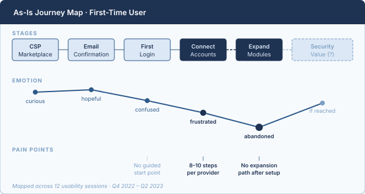
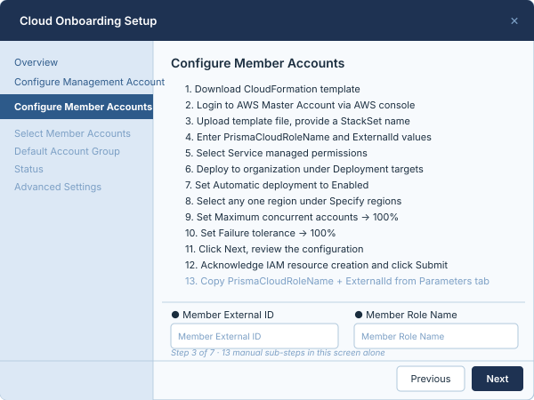
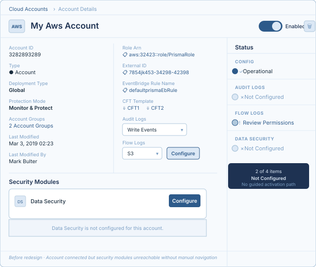
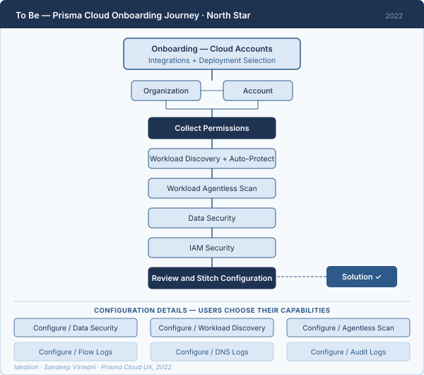
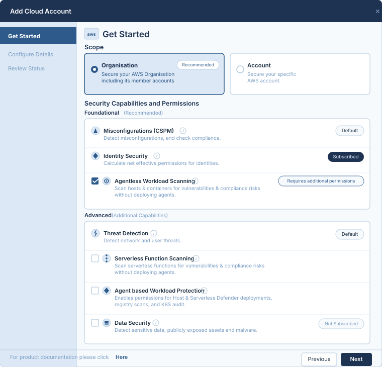

Cloud security onboarding was broken in four distinct ways — AWS, Azure, and GCP each had their own wizard, their own mental model, their own failure modes. Security engineers were abandoning setup mid-flow. I led research across four enterprise personas to find the root cause, then designed a single unified modal that collapsed provider complexity into three consistent steps.
Role: Principal Product Designer — user research, competitive strategy, and design direction across 4 personas, collaborating with Product, Engineering, and Customer Success to define a unified onboarding standard at Palo Alto Networks.
Prisma Cloud monitors 4 billion cloud resources and analyses 1 trillion events daily — all of which depend on cloud accounts being successfully connected. Onboarding isn't setup. It's the activation gate for the entire platform.
Prisma Cloud's full persona system spans 10 distinct user types — from CISO to SoC Analyst to Developer. Onboarding directly affected four of them. 12 usability sessions and research interviews later, the same four failure modes surfaced every time.
Cloud accounts, repositories, and security modules were disconnected. Users navigated between systems for tasks that should have lived in one unified place.
AWS required up to 10 steps. Azure up to 8. GCP up to 10. Each provider had its own wizard, its own terminology, its own mental model to learn.
Users didn't know how to configure features after signing up. Security Foundations and Advisories were buried — there was no guided path forward.
When configuration failed — customers had to reverse-engineer the cause themselves. "Permission failed" could mean IAM Role. "Authentication failed" could mean Enterprise App misconfiguration. The UI gave no categorisation, no recovery path, no next step.
"Need to have all options you want to onboard on the first go — ECR, Kubernetes, Repo, Config, Cloudtrail, VPC, DNS... The platform should be one tool."— Enterprise customer, Cloud Account Usability Test · Q4 2022–2023
Research mapped 10 personas across Prisma Cloud. Four owned the onboarding moment — each with a different relationship to complexity, security expertise, and what "done" looked like.
Ignasio · IT Ops
Onboarding-only. No security background.
Brought in purely to connect cloud accounts and invite team members. Hands-off after that. The wizard was designed for engineers — but Ignasio was the one running it.
Vanessa · Cloud Security Practitioner
Onboarding is the start of her full journey.
Needs Code-to-Cloud coverage — policy controls, team alerts, compliance reports. Onboarding is her entry point. A broken first step derails everything that follows.
Ricardo · DevSecOps Leader
"Don't show me onboarding stuff."
Focused on alerts, vulnerabilities, and runtime protection for his application. Doesn't manage onboarding — but his security coverage depends entirely on accounts being connected correctly upstream.
Celeste · CISO
Her dashboards only exist after onboarding works.
Needs inventory broken down by application, owner, and risk. All of that data comes from connected cloud accounts. Onboarding failure is invisible to her — until the dashboards are empty.
Root cause — wrong user, right task. The wizard assumed security expertise. Ignasio had none. Vanessa needed speed. Ricardo needed it invisible. Celeste needed it done. One interaction model had to serve all four — without bending to any one of them.
The breakthrough didn't come from the first sketch — it came from mapping every provider's failure mode side by side. Three phases of thinking, each narrowing toward a single unified answer.
Design goal — plug and secure. Connect a cloud account and immediately start seeing security value — no consulting support, no follow-up calls, no abandoned setup flows. That was the standard we held every decision against.
Mapped the full first-time user journey: CSP Marketplace → Confirmation Email → Dashboard → Platform. Users lacked immediate gratification. Security Foundations, Advisories, and Cloud Accounts were all disconnected entry points with no coherent thread.
As-Is Journey Map · First-Time User

Emotion dropped sharply at two points: connecting accounts, and expanding into security modules. Users who couldn't reach security value abandoned the platform entirely.
The wizard was the first failure: AWS 8–10 steps, Azure 6–8, GCP 8–10, each with its own mental model. But there was a second failure hiding behind it — once users connected an account, there was no guided path to activate security modules. CSPM, CIEM, and runtime protection were buried across disconnected sections with no thread between them.
Problem 1 — Broken Land · AWS Configure Member Accounts · Step 3 of 7

One step, of seven, requiring 13 manual actions inside AWS CloudFormation. The person tasked with running this had no AWS security background.
Problem 2 — Broken Expand · Post-Onboarding Dashboard

After connecting, users landed in a dashboard with four disconnected sections — no module activation status, no guided path, no indication of what to do next to reach security value.
North Star — To Be Scenario
The vision was to make onboarding and capability selection the same moment — not two separate journeys. Connect your account, choose what to protect, review and stitch. One guided flow, no abandoned setup, no hidden sections to discover later.

Ideated in 2022 — this flow became the north star that shaped every design and stakeholder conversation that followed. Onboarding wasn't the gate before security value. It was the security value.
Two fixes shipped together. The unified 3-step modal collapsed wizard complexity: Get Started → Configure Details → Review Status, identical across AWS, Azure, and GCP. The side panel with tabs solved expansion — a contextual panel surfacing CSPM, CIEM, and runtime module activation immediately after account connection, without navigating away. Both required API rewrites and alignment across five product owners.
After — Unified Modal · AWS · Get Started · Step 1 of 3

3 steps instead of 7. Scope, permissions, and capability selection unified in one screen. Foundational modules shown with status — Advanced capabilities available to opt into. The same modal works identically for Azure and GCP.
"My idea was to have a unified design to onboard all providers. Getting all product owners to agree was the hardest design problem I solved on this project."— Design decision rationale, Prisma Cloud Onboarding · Palo Alto Networks, 2023
WIZ solved step count — two steps, clear labels, fast ingestion via CloudTrail. They own simplicity. Our differentiation was the cognitive model: where WIZ shows options, Prisma Cloud guides decisions. Unified permissions, progressive disclosure, and built-in error recovery gave us an edge that step-count reduction alone couldn't replicate.
The redesigned 3-step modal was measured against every cloud provider deployment type. Every metric moved in the right direction.
| Provider | Deployment | Wizards Before → After | Reduction | Clicks Before → After | Reduction |
|---|---|---|---|---|---|
| AWS | Standalone | 5 → 3 | 40% | 10 → 6 | 40% |
| Organization | 6 → 3 | 50% | 15 → 6 | 60% | |
| GCP | Project | 6 → 3 | 50% | 11 → 6 | 45% |
| Organization | 7 → 3 | 57% | 17 → 9 | 47% | |
| Azure | Subscription | 6 → 3 | 50% | 16 → 10 | 38% |
| Tenant | 7 → 3 | 57% | 19 → 8 | 58% |
All cloud deployments now share the same 3-step modal experience — no more learning different interaction patterns per provider.
"This is exactly what builds our confidence in Prisma Cloud, we really feel Prisma Cloud is listening to customers and improving what matters to us. This simplifies our effort as we plan to add more accounts in the next few months."Informatica
"We currently have a 10-step onboarding checklist for each cloud type and based on what we see currently, I can reduce that to just a couple for each cloud. This is a huge improvement for us in terms of how we enable different capabilities Prisma Cloud offers."Unacademy
"Unified Onboarding experience in PCEE was very positive experience. Everything just worked."NVIDIA POC Team
Internal recognition from Engineering leadership, Product, and UX teams across multiple regions:
Complete case study PDF with detailed research findings, design iterations, and competitive analysis available upon request.
Research artifacts, design iterations, and stakeholder feedback included.
Enter the password to download the full PDF with wireframes and research findings.